Introduction
CLI Tools
Document
Draw
UI Tools
Editor
Navigator
Nocturn: A Visual Language for OWL
Nocturn is another entry in the space of visual representations for OWL, and therefore RDF Schema as well. It's intent is to be as simple as possible for the most common cases, with extensibility for complex scenarios. Nocturn (named for a species of owl, Athene noctua, the little owl) tries to use as few basic building blocks as possible, with strict rules on presentation and style to allow for even simple tools such as GraphViz to be used as a renderer.
Some attempts at visual representations have proven too simple and make it very hard to represent even mildly complex cases, others have a set of so many low-level primitives that a representation of a mildly complex case looks like a spider-web of interconnected nameeless nodes.
Common Notation Rules
- Node and Edge Lines
- Line strokes must be single, with no shadows or other effects.
- Line weights must be light, in the
0.75..=1.75ptrange. - Line color must be dimmer than that of the text so that the text is
more readable. The examples here use the SVG color name
grayor the RGB value#808080.
- Node Labels
- Labels must be centered horizontally and should be centered vertically.
- Do not use font styles, bold, italic, or other forms for name labels.
- Do not use color for name labels.
- Whether to display prefixes for names is a tool choice, but must be available to the user to disambiguate same names in different namespaces.
Line Styles
In some cases ...
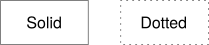
Edge Shapes
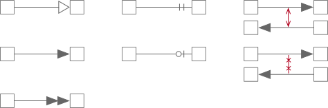
Nodes
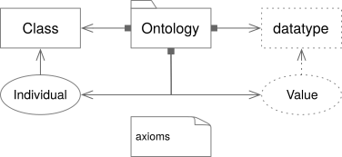
Class Notation
Class Rules
- The overall shape is a rectangle, it's must be greater than it's height, and corners must be hard, not rounded.
- Node lines must be solid.
Datatype Notation
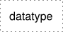
Datatype Rules
- The overall shape is a rectangle, it's must be greater than it's height, and corners must be hard, not rounded.
- Node lines must be dotted.
- More space must exist between dots than the width of the dots for clarity.
Individual Notation
Individual Rules
- The overall shape is an ellipse, it's must be greater than it's height.
- Node lines must be solid.
Literal Value Notation
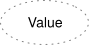
Extended Notation
:thing :value "?" .
:thing :name "Simon"@en .
:thing :age "21"^^xsd:integer .
Literal Value Rules
- The overall shape is an ellipse, it's must be greater than it's height.
- Node lines must be dotted.
- More space must exist between dots than the width of the dots for clarity.
- If the value is a
langStringa horizontal bar must separate the value above from the language identifier with the prefix@character. - If the value...
- If the value (ellide...) ...
Ontologies
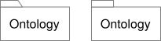
Ontologies Rules
- The node's shape must be a folder, a rectangle with a small tab on the top-left corner.
- The diagram above shows the preferred form with a sloped rectangular tab on the left.
- The alternate, acceptable, form with a plain rectangular tab on the right.
Axioms
Axiom Rules
- The node's shape must be a note, a rectangle with a folded-over top-right corner.
- Axiom content must be left-aligned, not centered.
Simple Edges
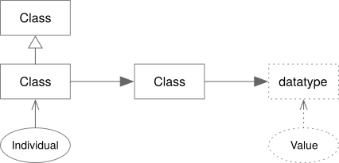
The edge between Class and Class represents an object property, described
in detail in Object Properties. The edge
between Class and datatype is a datatype property and described in detail
in Datatype Properties.
rdfs:subClassOf
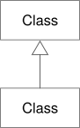
rdfs:subClassOf Rules
TBD
rdf:type
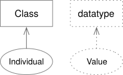
rdf:type Rules
TBD
Object Properties
Object Properties, in general, are shown as directed edges between class nodes. The following sections outline the notation for common property types, and patterns.
owl:ObjectProperty
owl:ObjectProperty Rules
TBD
owl:equivalentClass
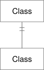
owl:equivalentClass Rules
TBD
owl:inverseOf
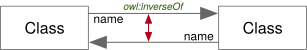
owl:inverseOf Rules
TBD
owl:disjointWith
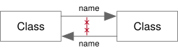
owl:disjointWith Rules
TBD
owl:SymmetricProperty
owl:SymmetricProperty Rules
TBD
owl:TransitiveProperty
owl:TransitiveProperty Rules
owl:SymmetricProperty and owl:TransitiveProperty
owl:Symmetric/TransitiveProperty Rules
TBD
Datatype Properties
Datatype Property Notation
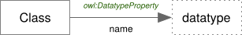
Datatype Property Rules
TBD
Datatype Restriction Notation
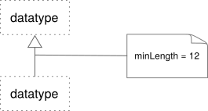
Datatype Restriction Rules
TBD
Individual Relations
owl:sameAs
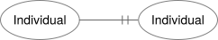
owl:sameAs Rules
TBD
owl:differentFrom
owl:differentFrom Rules
TBD
Class and Value Expressions
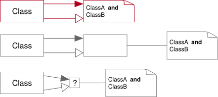
Logical
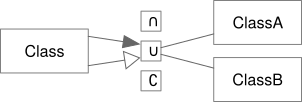
:exampleProperty a owl:ObjectProperty ;
rdfs:subPropertyOf owl:topObjectProperty ;
rdfs:domain :Class ;
rdfs:range [
a owl:Class ;
owl:unionOf (
:ClassA
:ClassB
)
] .
Logical Rules
TBD
Enumeration
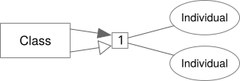
Enumeration Rules
TBD
All Different
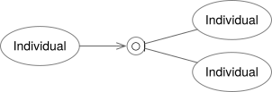
All Different Rules
TBD
Datatype Restrictions
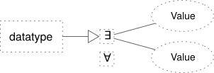
Datatype Restrictions Rules
TBD
General Axioms
Ontology Relations
Containment
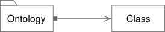
Containment Rules
- The source end of the edge must be a filled square.
- the target end of the edge must be an open arrow.
Imports

Imports Rules
TBD
Dependency and Prefix

Dependency and Prefix Rules
TBD